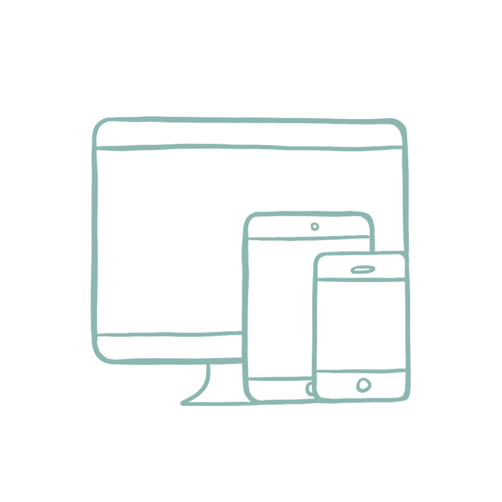

Meet the Creator

Mars Veyounce S. Pesquira is a freelance digital artist based in the Philippines. She specializes in graphic illustration as well as graphic design and has managed to gain experience with logo commissions and graphic illustrations from various small businesses.
She is better known in her local art community through her art alias, Astrea. Inspired by her love of stars and celestial beings (as well as being nicknamed “star child” by several people), she adopted the name from the Greek goddess Astrea meaning "star-maiden".
Mars is currently taking her bachelor's degree in De La Salle College of St. Benilde and majoring in Multimedia Arts.
The Goals
- 1. Inform college students of the cultural phenomenon that is “utang na loob” and how it affects our everyday lives as SouthEast Asians.
- 2. Provide a platform for college students with introductory resources that can be used as a starting point for future-proofing, organized for easy understanding.
- 3. Raise awareness through the use of visual media with the hope of encouraging college students to take their future proofing more seriously.
Behind the Scenes
×